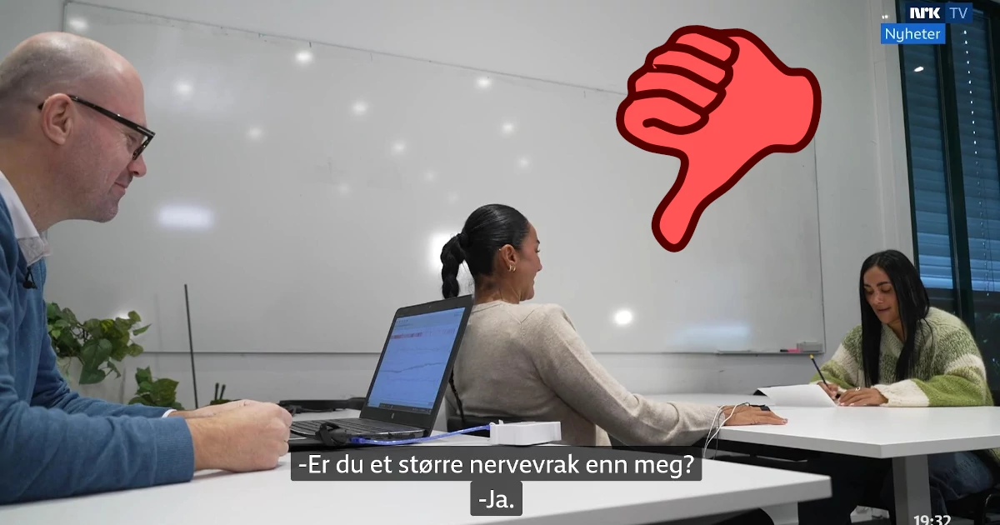

Sikkerhet, vakthold & beredskap · Sandefjord
Om Etterforsker1 Gruppen AS
Nedenfor kan du lese mer om noen av våre tjenester.
Etterforsker1 Gruppen AS bistår kunder i Sandefjord med fagmessige leveranser innen vakthold, mobilvakt og utrykning, alarm, adgangskontroll og kamerasystemer, verdihåndtering og sikker logistikk og sikkerhetsrådgivning, gransking og analyse.
Tilstedeværelse, gode rutiner og pålitelig teknisk sikring forebygger uønskede hendelser før de oppstår. Alle oppdrag håndteres med høy etisk standard, streng konfidensialitet og respekt for personvern.
Etter hver vakt, kontroll eller gjennomgang leveres tydelig rapport med eventuelle avvik og tiltak. Vi tilpasser løsningen etter virksomhetens faktiske risikobilde, lokaler og åpningstider.
«Faglig tyngde, årvåkenhet og moderne sikkerhetsteknologi som beskytter mennesker og verdier.»

Vil du vite mer om hvordan vi kan hjelpe deg?
Ta kontakt for en uforpliktende samtale med våre fagfolk.
Ta kontakt